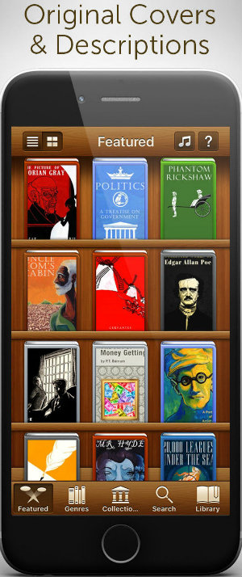

The Free Books app provides 51,305 classic titles for your selection, and allows for highlighting, notes, dictionary support, and bookmarks, which make it an asset for any library. It has got a brand new look and functionality! Easy-to-use and many new useful functions. It is a door to unlimited reading. Download any of the 51,305 ebooks including the world best known classics, and read with the fully featured eReader including dictionary.
Features

Pros
51,305 Free Books of various genres.
5,199 Audiobooks available for listening.
Back up of your library within their server.
Download unlimited number of books and read also offline.
Create your own personal library.
Automatically sync between your devices.
See your reading statistics.
Original covers & descriptions.
Rate books and write your own reviews for others to see.
Old design function for those who loved our old app’s look.
Cons
App constantly bombarded by huge pop up ads and users are forced to watch videos.
Additional Info
Offered By: Digital Press Publishing s.r.o.
No. of unique downloads: more than 40 million.
Current version(for mac & PC): 5.1.0
Updated on(for mac & PC): Oct 05, 2016
Advantages of open source tools
Cheaper than commercially marketed products.
Created by skillful and talented people.
Highly reliable.
Help you become more flexible.
Disadvantages of open source tools
Vulnerable to malicious users.
Might not be as user-friendly as commercial versions.
Don’t come with extensive support.
Generally, they can be less “user-friendly” and not as easy to use because less attention is paid to developing the user interface as it is not a commercial product.